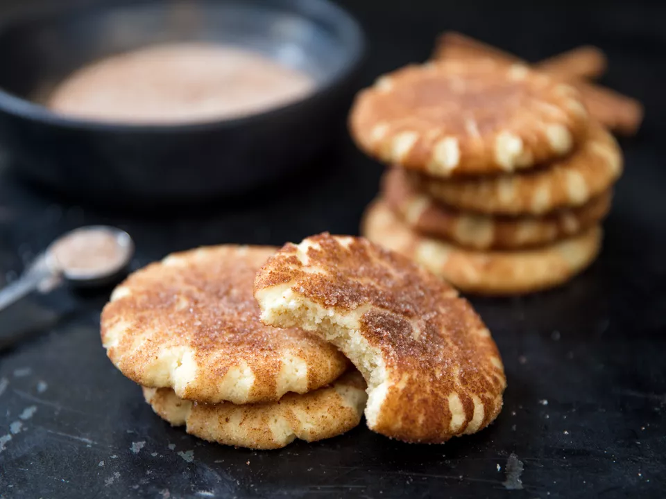

Description:
If you think snickerdoodles are simply cinnamon sugar cookies, think again. Properly made, they have crispier edges and chewier middles, with a rich and tender crumb beneath their shimmery crusts. Once upon a time, those qualities came from cutting butter with hydrogenated shortening, but virgin coconut oil does a better job. Its subtle aroma heightens both the cinnamon and the vanilla, while helping the snickerdoodles stay rich, moist, and chewy.
ingredients:
For the Cinnamon Sugar:
- 2 ounces sugar (1/4 cup; 57g)
- 4 tsp ground cinnamon
Instructions:
- Adjust oven rack to middle position and preheat to 400°F (200°C). Combine butter, coconut oil, sugar, salt, baking powder, and vanilla in the bowl of a stand mixer fitted with the paddle attachment. Mix at low speed to combine, then increase to medium and beat until soft, fluffy, and pale, about 5 minutes, although the exact timing will vary. Halfway through, pausing to scrape the bowl and beater with a flexible spatula, and then resume mixing on medium speed. Add the egg and continue beating until smooth. Reduce speed to low, add flour, and mix to form a stiff dough.
- Using a cookie scoop, divide dough into 2-tablespoon portions. If you like, these can be transferred to a zipper-lock bag and refrigerated for up to 1 week, or frozen for up to 3 months; soften to about 68°F (20°C) before baking.
- For the Cinnamon Sugar: Mix sugar with ground and grated cinnamon in a small bowl, adding more spice if you prefer. (It should taste very intense to offset the mild dough.) Roll each portion of dough into a smooth and sticky ball, then tumble in cinnamon sugar until fully coated.
- Arrange on a parchment-lined aluminum half sheet pan, leaving 2 1/2 inches between balls, then flatten into 2-inch disks about 1/2 inch thick. Generously cover with the remaining cinnamon sugar, creating a thick layer that will crack and crinkle in the oven.
- Bake until the snickerdoodles begin to spread, about 5 minutes, then reduce temperature to 350°F (175°C). Continue baking until firm around the edges but steamy in the middle, about 6 minutes longer. Cool directly on half sheet pan until the crumb is set, about 8 minutes. Enjoy warm, or store in an airtight container for up to 3 days at room temperature.